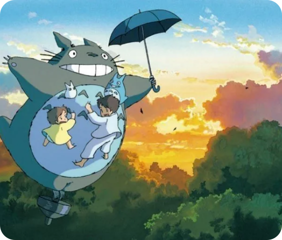

«Мой сосед Тоторо» — это не просто анимационный фильм, а настоящая симфония эмоций, где музыка играет ключевую роль в создании уникальной атмосферы. Композитор Джо Хисаиши, который работал над музыкой для многих фильмов студии Ghibli, сумел создать звуковое сопровождение, которое не только дополняет визуальные элементы, но и углубляет восприятие сюжета и персонажей.
1. Эмоциональная связь через музыку
Музыка в «Моем соседе Тоторо» помогает установить эмоциональную связь между зрителем и героями. Лёгкие и мелодичные темы, такие как главная тема Тоторо, вызывают чувство умиротворения и радости. Эти мелодии ассоциируются с детской невинностью и открытостью к миру, что позволяет зрителям глубже прочувствовать переживания персонажей. Когда сестры Мэи и Сацки исследуют природу или встречают Тоторо, музыка подчёркивает их восторг и удивление.2. Создание атмосферы места и времениЗвуковое сопровождение также играет важную роль в создании атмосферы японской деревни 1950-х годов. Мелодии, наполненные элементами фольклора и традиционной японской музыки, переносят зрителя в другой мир, где природа и человеческие чувства переплетаются. Звуки природы — шорох листьев, пение птиц — в сочетании с музыкальными темами создают ощущение гармонии с окружающим миром.3. Контраст и динамикаХисаиши мастерски использует контраст в музыке для передачи различных эмоций. В моменты радости и веселья музыка становится более яркой и игривой, тогда как в сценах тревоги или грусти мелодии становятся более мрачными и меланхоличными. Например, сцена, когда Мэи теряется, сопровождается напряжённой музыкой, создающей чувство беспокойства. Это позволяет зрителю ощутить напряжение вместе с персонажами.4. Тема волшебства и чудесМузыка в фильме также подчёркивает тему волшебства. Мелодии, связанные с Тоторо и другими духами природы, имеют сказочный характер, что усиливает ощущение чуда и магии. Использование инструментов, таких как флейты и струнные, создаёт лёгкость и эфемерность, что идеально соответствует образу Тоторо как доброго духа леса.ЗаключениеВ «Моем соседе Тоторо» музыка не просто фоновое сопровождение — это важный элемент повествования, который помогает передать эмоции и атмосферу фильма. Джо Хисаиши создал звуковую палитру, которая делает каждую сцену незабываемой. Музыка связывает зрителя с героями на глубоком уровне, позволяя переживать их радости и печали. Благодаря этому «Мой сосед Тоторо» остаётся одним из самых любимых анимационных фильмов всех времён, а его музыка продолжает вдохновлять поколения зрителей.